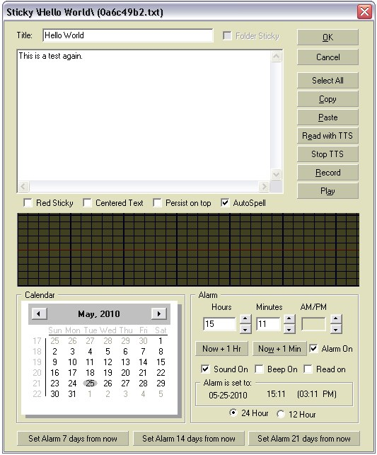

|
Setting a
CryptoSticky
Alarm
CryptoSticky
has an easy to use, simple alarm. It is gentle, predicable, and highly
configurable. One can let the computer read out loud the title of the
sticky at
alarm time, or play a WAV file, or sound the computer's built in system
speaker. The system speaker option is useful in case the
external speakers are not connected at the time of the alarm.
CryptoSticky
has
built in
facility to warn you if you missed an alarm, for instance, the computer
was powered off while the alarm was due. Naturally, the alarm is not
operational while the computer is off. The CryptoSticky alarm can
wake up the computer from standby mode, a very useful feature for
laptops, and a green friendly feature for the environment.
|
One of
the hardest part of any alarm
system is predictability. CryptoSticky addresses this by letting you
test
the alarm subsystem with a couple of clicks. Here is how: On the
screen shot to the right, a testing scenario is documented.
As the screen shot to the right indicates, the alarm is set to:
Jun 17, 2010 10:02 PM
We
achieved this time setting by pressing the button labeled 'Now + 1
Min'. This
will set the alarm time to the next (upcoming) minute. When saving this
alarm, (by pressing 'OK') CryptoSticky is armed to display an alarm at
the next minute boundary.
This quick, less than a minute test (in our
view) is a very important step. It shows the alarm function in
operation, confirms the speaker's operation, confirms the beep
operation, and most importantly, allows one to experience the alarm
prompts and the alarm interaction states.
CryptoSticky will let
you set up alarm for any point in time, and will not impose
restrictions on the alarm date/time. One special case is when the
computer is off while the alarm is due to display. If that occurs,
CryptoSticky will alert you of missed alarms on next startup. If
CryptoSticky alerts you of this fact, one may clear the alerts in the
'Configure' Dialog by pressing the 'Clear Missed Alarms List' button.
CryptoSticky can be configured to read the title of the memo
with text to speech (with the 'read on' checkbox), or it can be
configure to beep the built in speaker of the computer, or play a
pre-recorded wave file.
|

|
Indeed, in the next minute, the
following dialog shows:
 |
The
alarm
dialog
will
show silently for a couple of seconds before any sound is
generated. This allows one to disable the sound
before it ever triggers. A feature, that may be useful for meetings or
quiet time, where one has the option to silence the alarm sound before
it disturbs anyone.
The alarm sounds will occur in the following
order: a.) the title of the memo is read out loud with text to
speech b.) the computer system speaker beeps 3 times,
c.) The
computer's main speaker plays the configured tone or wave file.
|
The snooze
button silences the sound,
and will delay the alarm operation by one or three minutes. The alarm
operation
will resume after the snooze interval. The alarm
can be dismissed at
any time with the 'Close' button. (Alt-C) One may silence the
alarm immediately with the 'Stop
Sound' button..The 'Stop Sound' button will silence the sound
without dismissing the the alarm dialog. The 'Snooze' buttons will not
acknowledge the alarm, dismiss the alarm dialog, and the alarm cycle
re-starts after the snooze time elapsed.
Useful alarm hot keys:
ALT-1 to snooze for one minute
ALT-3 to snooze for three minutes
ALT-D to stop sound
ALT-S to Show the memo that triggered the alarm
ALT-C to Silence and Close this alarm:
Copyright © by
RobotMonkeySoftware
|